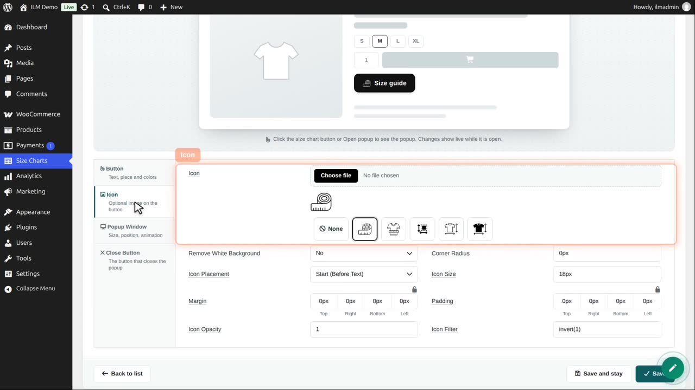
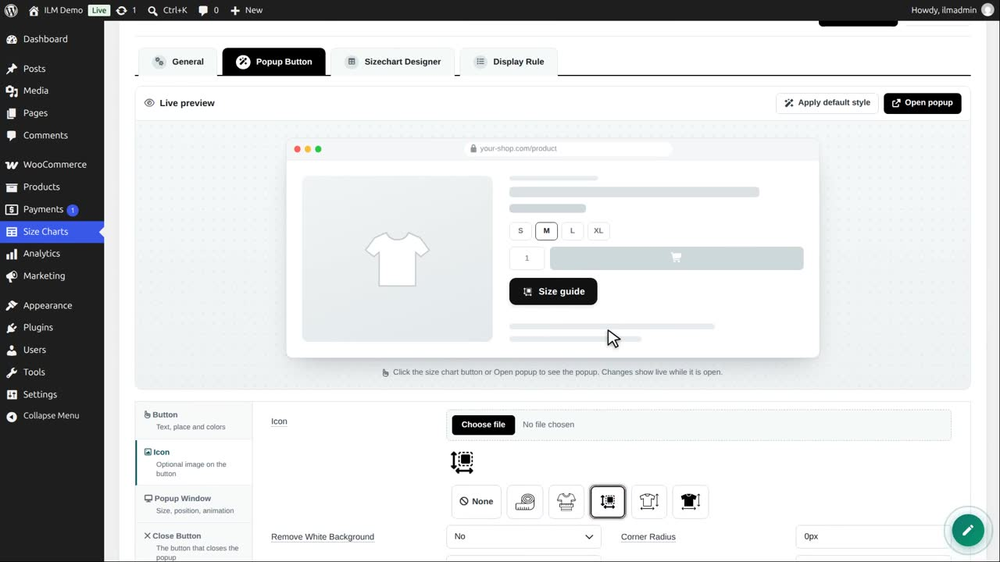
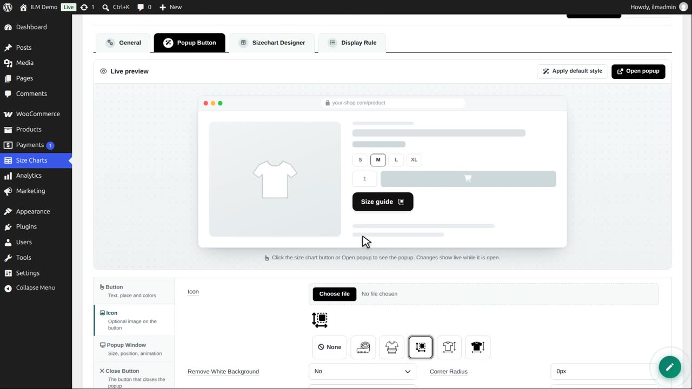
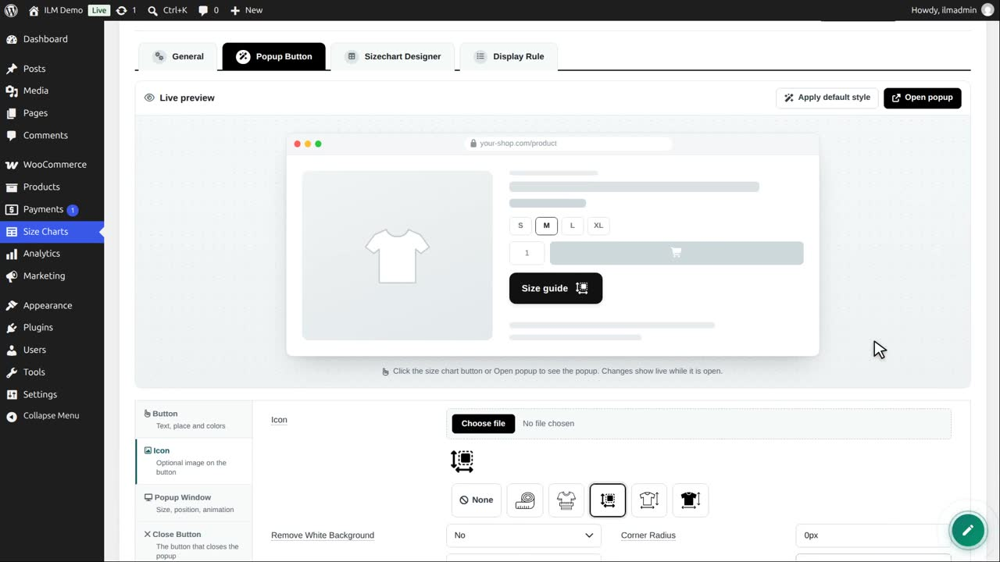
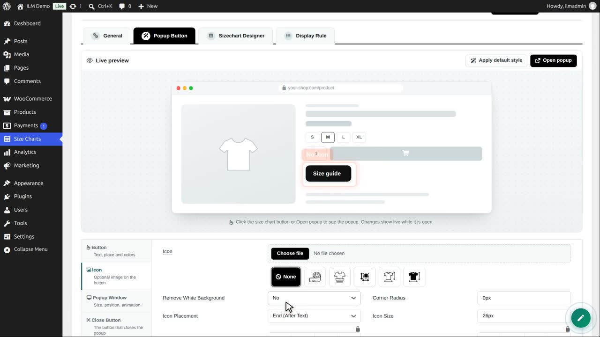

Edit the chart, open Popup Button, then Icon. Upload your own image, or click one of the samples.

We click the size sample. The preview button shows it at once.

Icon placement puts it before or after the text.

Icon size: 26 pixels. Remove white background helps a picture that has a white square around it.

None removes the icon. We put the sample back, and save.

In the shop, the button shows the icon with its text.